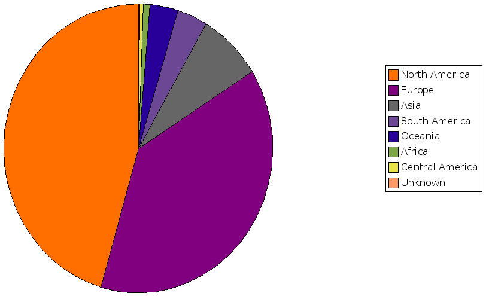

-
jEdit Ruby Editor Plugin
Rob McKinnon
-
The Web says ...
-
"The Ruby Editor Plugin for jEdit is a joy to use. ... a great open source Ruby Editor, good for Rails work too ... I recommend it"
- Review of JEdit as a Ruby on Rails IDE | Data Inadequate
-
"I eventually settled on Jedit for Ruby as recipient of the 'best free Ruby IDE I found today' award."
- Ruby IDE - a quick opinion | exactly one turtle
-
Why a new editor?
- Started as a twinkle in my eye at RubyConf 2004 ...
- ... and as a few beanshell macros for jEdit
- Wanted to:
-
have auto-insert 'end' - the killer feature
-
prove naive type-based completion was possible
-
have syntax aware navigation
-
... [insert your idea here]
-
What's jEdit?
- jEdit - a programmer's text editor
- Free Software released under GPL
- Core written by Slava Pestov (started he was 15)
- Plugins written by the masses (like me)
- Implemented in Java ...
-
Why a jEdit Ruby Editor Plugin?
- Yeah ... it's Java ... I know ... but:
-
I'd worked on jEdit plugins before
-
Works on GNU/Linux, Mac OSX and Windows
-
Allowed me to use JRuby parser
-
A neat Free Software programmer's editor!
-
Why not the Eclipse Plugin?
- Find the Eclipse user interface constraining
- Don't like the Ruby Eclipse license, it's CPL
- Faster for me to develop a jEdit plugin
-
Plugin Features
- Auto-indent and insert 'end'
- File structure popup
- Syntax error highlighting
- Type-based method completion
if it quacks like a duck it'll probably waddle like a duck
- Integrated RDoc viewer
-
Implementation
- org.jedit.ruby
-
- ast
- cache
- completion
- icons
- parser
- ri
- structure
- test
- utils
-
Parsing with JRuby
DefaultRubyParser parser = new DefaultRubyParser();
parser.init(new RubyParserConfiguration());
LexerSource source = LexerSource.getSource(filePath, content);
RubyParserResult result = parser.parse(source);
Node node = result.getAST();
-
Walking Abstract Syntax Tree
Node node = result.getAST();
RubyNodeVisitor visitor = new RubyNodeVisitor(lineCounter, moduleMembers, classMembers, methodMembers, listeners);
if (node != null) {
node.accept(visitor);
}
List members = visitor.getMembers();
-
NodeVisitor Implementation
class RubyNodeVisitor extends AbstractVisitor { ...
protected void visitNode(Node node) { ...
public void visitBlockNode(BlockNode node) { ...
public void visitNewlineNode(NewlineNode node) { ...
public void visitModuleNode(ModuleNode node) { ...
public void visitClassNode(ClassNode node) { ...
public void visitDefnNode(DefnNode node) { ...
public void visitDefsNode(DefsNode node) { ...
public void visitScopeNode(ScopeNode node) { ...
-
Parsing problems
- JRuby doesn't report node start offsets (only end offsets)
- I use regular expressions to identify start offsets - brittle
- Problems with single line modules, etc
- Auto-indent and insert 'end' also uses regular expressions
-
Getting RDocs into Java
- Use RI YAML format
- Didn't want to write a Java YAML parser
- Instead use Ruby to create serialized Java object XML files
- Wrote Java classes to represent RDoc
- YAML+Ruby -> serialized Java XML -> deserialized at runtime
-
Popularity
- Home page: 40 visitors a day, 7800 in total
- Download pg: 27 visitors a day, 5200 in total
- Top of Google search for "Ruby editor"
-
Download page by country
-
Download page by continent

-
Future features
- Import RDoc - gives you method completion for import
- Find usages
- Goto declaration
- Incremental selection
- Extract variable
- Extract method
- Code completion for user classes
-
Final words
-
"I've now been using jEdit fairly intensively for the past few days and have to say I'm a convert. ... it's a highly capable editor and I highly recommend checking it out."
- Editors and IDEs | Livsey.org